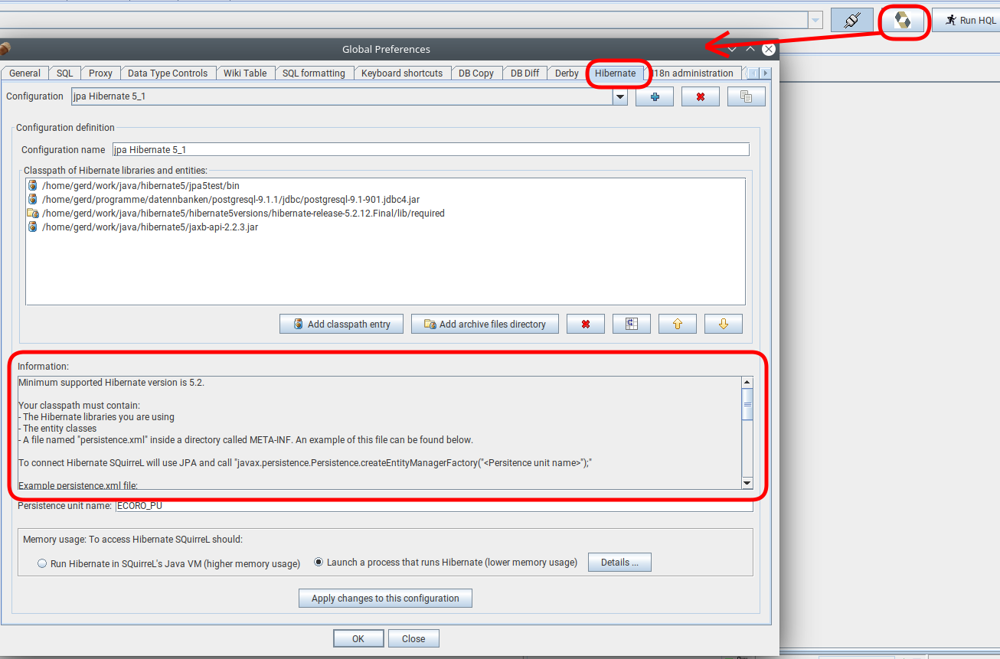
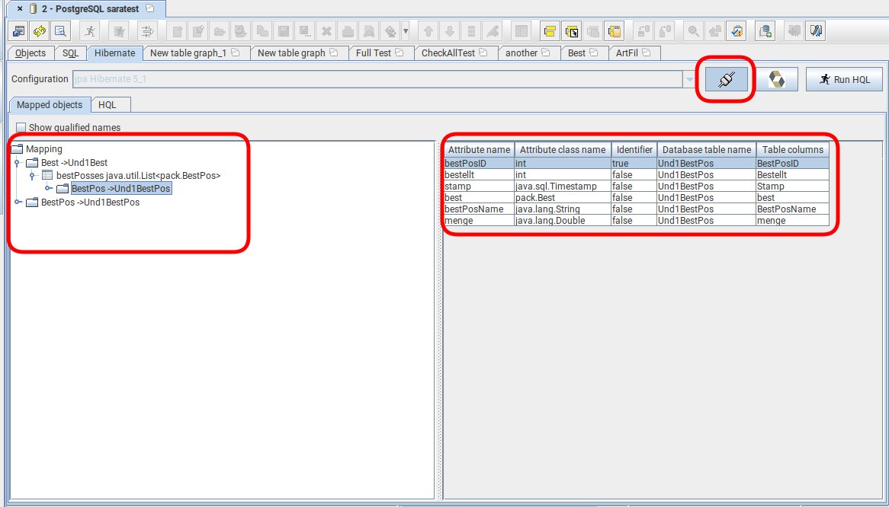
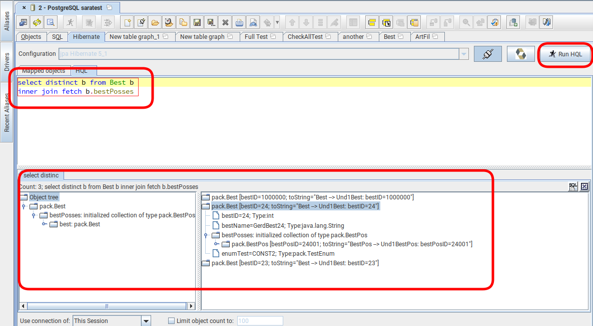

Hibernate Plugin
Before using the Hibernate Plugin you must create at least one Hibernate configuration in SQuirreL's Global Preferences:

With a completed configuration you are able to connect to a Hibernate/JPA session which will allow to browse mapped entities ...

... and to execute HQL/JQL statements.

For transparency it is recommended to create a Hibernate/JPA sessions in external a process and to run the process in console: